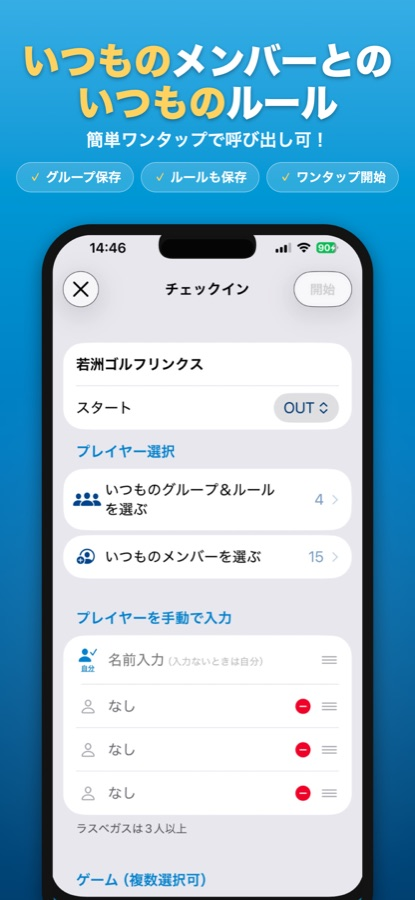
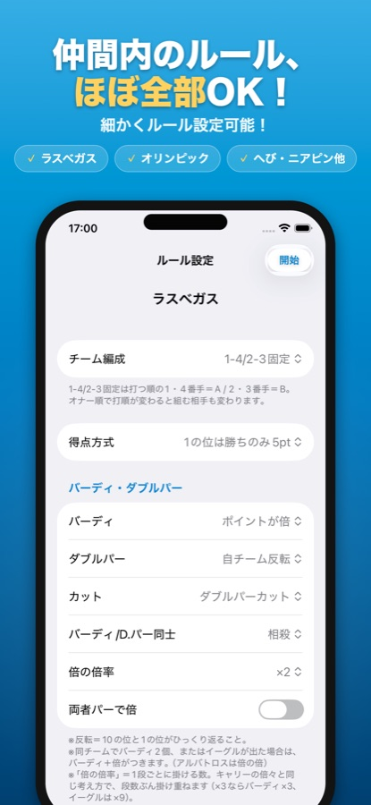
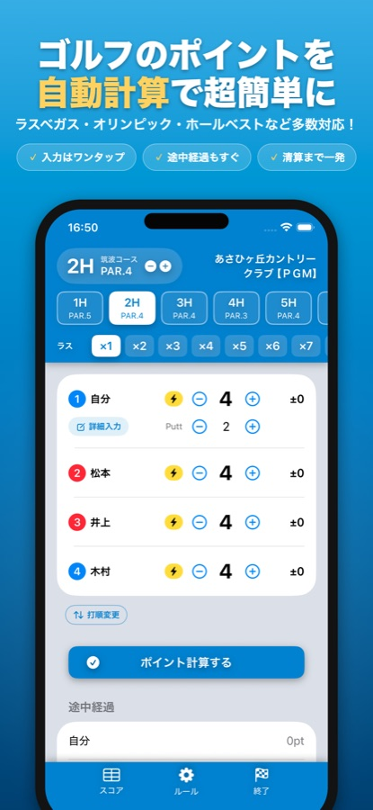
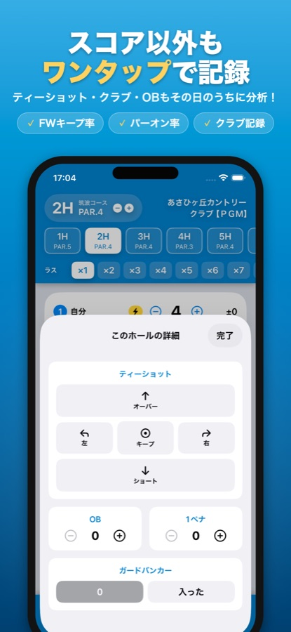
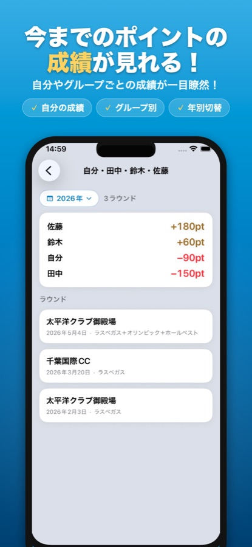
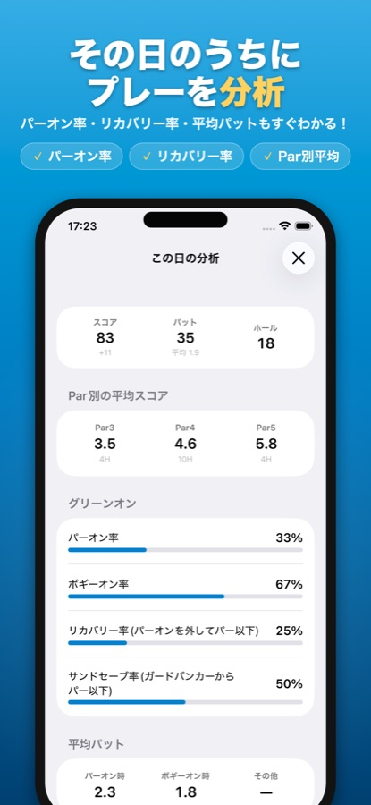

SQOREの使い方
SQOREは難しい設定なしで使えます。ラウンド当日はチェックイン → ゲームを選ぶ → 打数を入れるの3つだけ。あとは清算まで全部自動です。
1ゴルフ場にチェックイン
ホーム画面のラウンドするをタップして、今日のゴルフ場を検索。チェックインするとコース情報（各ホールのPAR）が自動でセットされます。

2メンバーとゲームを選ぶ
一緒に回るメンバーを入れて、遊ぶゲーム（ラスベガス・オリンピック・ホールベストなど）をオン。バーディ倍やカットなどの細かいルールもここで設定できます。プレミアムなら、いつものグループを保存しておいて次回は呼び出すだけ。
ゲームをしない日は「スコアのみ」で始めればOK。各ゲームのルール自体を知りたい場合はゲームルール解説へ。

3打数を入れて「ポイント計算する」
ホールごとに各メンバーの打数を＋−でワンタップ入力。ポイント計算するを押すと、そのホールの結果と途中経過がすぐに出ます。いま誰が勝っているかが一目瞭然なので、ラウンドが盛り上がります。

4詳細も記録（やりたい人だけ）
詳細入力からティーショットの方向・OB・ペナルティ・ガードバンカー・使用クラブもワンタップで記録できます。付けておくと、その日のうちにパーオン率やリカバリー率の分析が見られます。もちろん省略してもOK。

5終了して最終結果を確認
18ホール（またはハーフ）が終わったら「終了」タブへ。全ゲームを合算した最終結果（清算）が自動で出ます。写真とスコアを1枚にしたフォトスコアカードで仲間に共有もできます。確認したら保存して終了するで完了です。

6あとから履歴・成績・分析を見る
保存したラウンドはホームの履歴を見るからいつでも見返せます。自分やグループの成績は年別に自動集計。詳細を記録していれば、パーオン率・平均パットなどの分析も貯まっていきます。データはiCloudに同期されるので機種変更しても安心です。

よくあるつまずき
途中でルールを変えたくなったら？
ラウンド中でも「ルール」タブからゲームの追加や設定変更ができます。
電波の悪いゴルフ場でも使える？
スコア入力とポイント計算は端末内で動くので、圏外でも問題なく使えます。
操作を間違えて入力したら？
打数は−ボタンでいつでも直せます。過去のホールに戻って修正することもできます。
解決しない場合はサポートページをご覧ください。